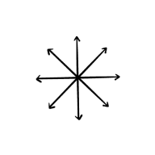

Project
Web-app ter ondersteuning van creatieve professionals

Samenvatting
Dit project bemiddeld in de samenwerking tussen creatives en stakeholders

Verantwoordelijkheden
User Experience Design
Interface Design
Project
Web-app ter ondersteuning van creatieve professionals
Samenvatting
Dit project bemiddeld in de samenwerking tussen creatives en stakeholders
Verantwoordelijkheden
User Experience Design
Interface Design
Research
Het project startte met een grote doelgroep, namelijk: creatieve professionals. Ik heb dit teruggebracht tot: audiovisuele specialisten. Deze beslissing is gebaseerd op deskresearch, waarbij ik heb vastgesteld dat er veel overeenkomsten zijn tussen de twee doelgroepen. Waaronder dat beide groepen initiatief moeten kunnen nemen en de mogelijkheid moeten hebben om nieuwe dingen te creëren.
Wat leidde tot de vraag: "Hoe kunnen we het creatieve proces van een audiovisuele specialist ondersteunen?" Om die vraag te beantwoorden, heb ik verschillende interviews met specialisten uit het werkveld opgezet. Dit waren onder andere een editor, cameraman en een scriptwriter. Wat het meest opviel, was het gebrek aan communicatie en begrip van klanten. Dit was een veelvoorkomend probleem; zowel voor, tijdens en na de productie van een project.
Ideate
Op basis van de uitkomsten heb ik meerdere creatieve sessies uitgevoerd. De focus lag vooral op het onderwerp ‘feedback’, wat een pijnpunt is voor beide partijen.
De creatieve sessies wezen op een tool die op een snelle manier feedback kan genereren. Dit zal een brug vormen tussen beide partijen, om hopelijk wat pijn aan beide kanten te verlichten. Het moeilijkste aan deze oplossing is dat niet elke klant bereid is om de moeite te doen om zo'n platform te gebruiken (volgens de doelgroep).
Develop
Iteratie 1
Het concept dat is uitgewerkt heet: Select. Het is een tool om meer betrokkenheid van stakeholders te krijgen; door ze meer te betrekken bij het proces van montage en distributie. Met verbeterde betrokkenheid van stakeholders is het waarschijnlijk dat ze meer empathie en welwillendheid tonen.
Tijdens iteratie 1 is een low-fidelity prototype ontwikkeld, om deelnemers een indruk te geven van hoe het concept eruit zou zien. Dit om te testen of de opzet wenselijk was (voor alle betrokken partijen).
Iteratie 2
Iteratie 2 kwam tot leven, met een esthetisch aantrekkelijk kleurenschema en verschillende componenten. Er is ook een mogelijkheid om feedback te geven en verschillende projecten werden verbeterd om een duidelijker beeld te geven van de nog te ontwikkelen webapplicatie. Andere toevoegingen omvatten werken via rollen/teams en een snelle rondleiding na de aanmelding.
Deliver
De laatste week stond in het teken van kleine reparaties, zoals bugs, geavanceerdere aanmeldflow en meldingen.
Het product is consistent met de doelgroep en klant (WeTransfer), met weinig tot geen gebreken of fouten die zijn opgemerkt. De webapplicatie bemiddeld in het geven van feedback tussen creatievelingen en stakeholders. Deze oplossing haalt het gewicht van de creatieveling en zorgt ervoor dat er meer empathie is vanuit stakeholders. Tijdens het project kreeg de applicatie meer vorm richting co-creatie, wat concludeerde dat het product bruikbaar was voor meerdere creatieve disciplines zoals; videografie, fotografie en design.